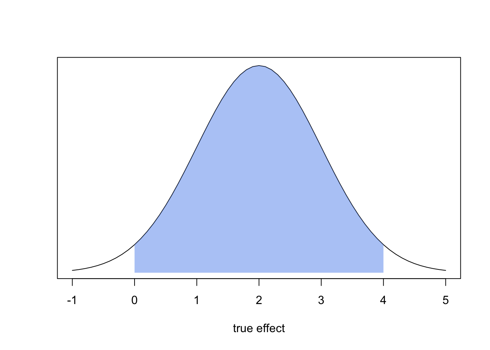
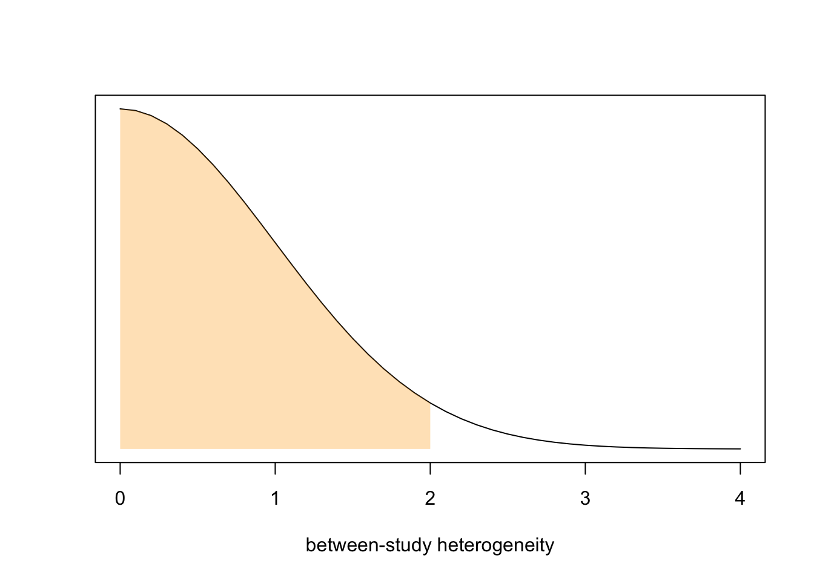
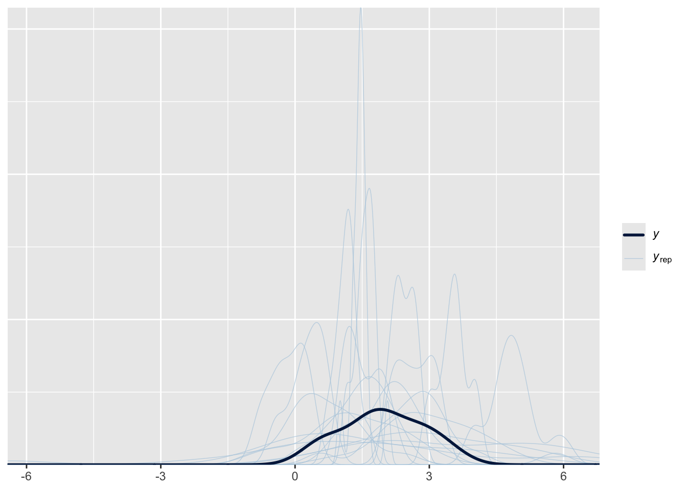
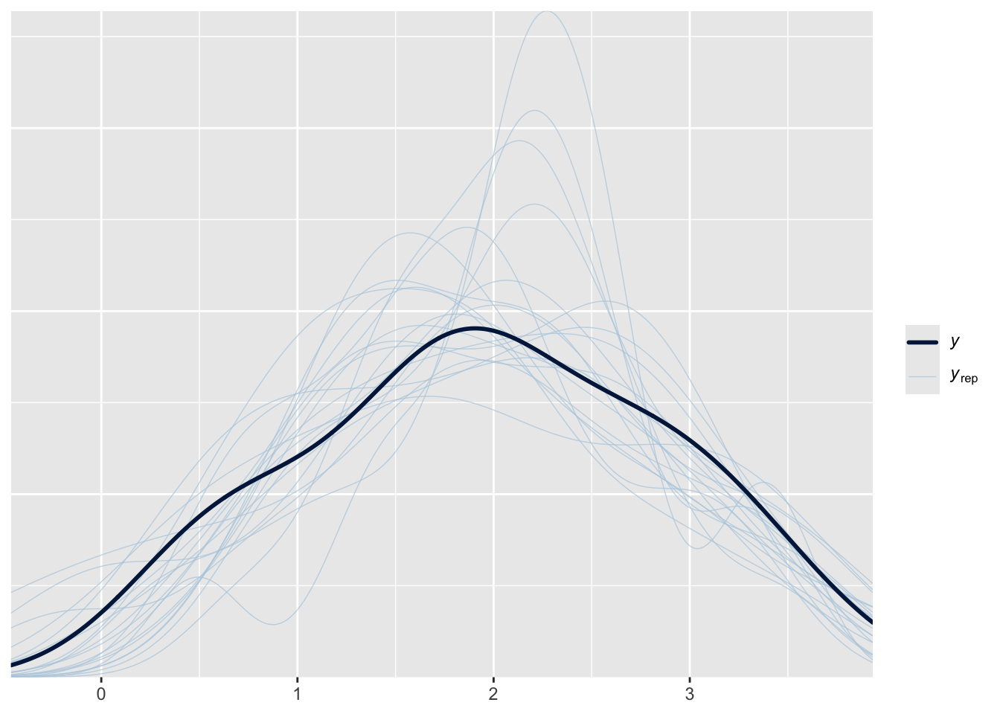
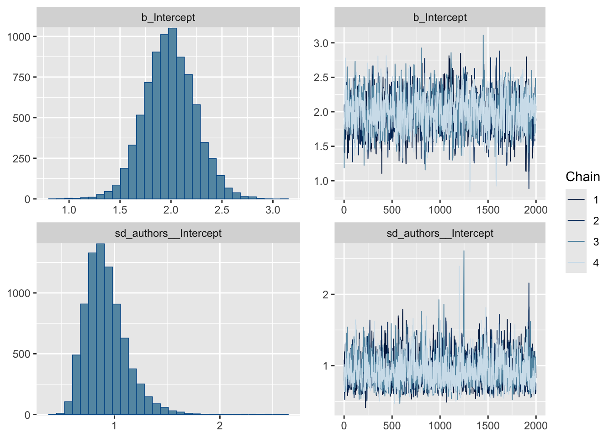

library(brms)
library(metafor)
library(tidyverse)
library(tidybayes)
library(ggridges)
library(glue)
library(magick)Comparing Bayesian and frequentist meta-analysis in R
R
meta-analysis
brms
metafor
simulation
Simulating studies
First, we need to simulate some studies that we can then pool.
Study sizes
All of them need a sample size, effect estimate, standard error (SE) and ideally a first author :`).
We begin with the sample size.
n <- 15
weights <- c(0.4, 0.5, 0.1)
components <- sample(1:3, size = n, prob = weights, replace = TRUE)
possible_sizes <- c(50, 500, 1000)
sample_size <- rpois(n, lambda = possible_sizes[components])We first decide that this meta-analysis will consist of 15 studies. We want to sample sample sizes out of a mixed distribution (that just means we mix multiple distributions), because just sampling out of something like a single normal distribution would be kind of boring.. all studies would have similar sample sizes, which is something that we rarely see in reality. components becomes a vector with length 15 that gets randomly filled with 1, 2 and 3, depending on the probability that we set in weights (e.g. 1 has a probability of 40%). Then, we decide for approximate sample sizes and save them in a simple vector possible_sizes. I’ve chosen 50, 500 and 1000, so that most studies are small or medium-sized and some (10%) are really large.
To introduce some randomness, we sample from a poisson distribution (great for counts) 15 times and each time we get the correct approximate sample size (from possible_sizes) for the components vector by indexing.
I don’t know about you, but I found this to be pretty confusing and not very intuitive. I promise the next steps will we way more straightforward.
Effect sizes
Now we sample effect sizes from a normal distribution.
effect_size <- rnorm(n, 1.9, 1)Standard error
To simulate standard errors (SE) for our studies, we just sample standard deviations from an uniform distribution and then simply use the formula to calculate SE.
# SD <- rexp(n, 0.8)
SD <- rgamma(n, shape = 225, rate = 75)
SE <- SD / sqrt(sample_size)We’re almost ready! Here I’m making up some author names and then stich together a nice tibble with all the data we need.
Code
library(tibble)
authors <- c(
"Gustav et al",
"Amanda and Osti",
"Vengur et al",
"Bjalla et al",
"Flugsvinn et al",
"Fiedel et al",
"Mimi and Bobby",
"Kapa et al",
"Lilly et al",
"Trausti et al",
"Flocke and Buddy",
"Beethoven et al",
"Olli et al",
"Bekecs et al",
"Dalia et al"
)
dat <- tibble(
authors,
effect_size,
SE,
sample_size
)
dat[1:15, ]# A tibble: 15 × 4
authors effect_size SE sample_size
<chr> <dbl> <dbl> <int>
1 Gustav et al 1.81 0.430 53
2 Amanda and Osti 1.86 0.438 49
3 Vengur et al 1.38 0.147 485
4 Bjalla et al 2.01 0.143 509
5 Flugsvinn et al 1.51 0.142 524
6 Fiedel et al 2.15 0.0963 1001
7 Mimi and Bobby 3.21 0.132 515
8 Kapa et al 2.73 0.410 53
9 Lilly et al 0.512 0.409 56
10 Trausti et al 0.613 0.395 54
11 Flocke and Buddy 0.801 0.141 501
12 Beethoven et al 3.46 0.132 485
13 Olli et al 1.85 0.138 480
14 Bekecs et al 2.80 0.393 59
15 Dalia et al 2.73 0.0812 1019Statistical model
The model
We model each study’s observed effect \(\hat{\theta}_{k}\) as a noisy reflection of the true effect in that study’s sample \(\theta_{k}\), with the noise represented by the within-study sampling error \(\sigma_{k}\) (treated as known based on reported standard errors). These true effects \(\theta_{k}\) are themselves modelled as draws from an overarching normal distribution which describes the true average effect across studies \(\mu\) and the between-study heterogeneity \(\tau\).
\[ \begin{split} \hat{\theta}_{k} &\sim \mathcal{N}(\theta_{k}, \sigma_{k}) \\ \theta_{k} &\sim \mathcal{N}(\mu, \tau) \\ \end{split} \]
Where \(\hat{\theta}_{k}\) is the observed effect size for study \(k\), \(\sigma_{k}\) is the within-study sampling standard deviation for study \(k\) (treated as known from the reported SE of each study), \(\theta_{k}\) is the true underlying effect for study \(k\), \(\mu\) is the overall pooled effect and \(\tau\) is the between-study standard deviation (heterogeneity).
Bayesian meta-analysis
Priors
\(\mu\) and \(\tau\) are the parameters we’ll actually get posterior distributions for. \(\mu\) describes the pooled effect across all studies and \(\tau\) describes the between-study heterogeneity. Now we need to set some priors for these two parameters.
Mu
What effect size could we reasonably expect here? We could of course be lazy and just use parameters we set in the simulation above, but that’s lame (and in reality we of course don’t have that knowledge).
Let’s say that from the literature we’ve read so far and plausibility, we are comfortable to say that the effect is probably positive not super big. We can translate this into \(\mu\) ~ \(\mathcal{N}(2, 1)\).
Code
x <- seq((-1), (5), by = 0.1)
y <- dnorm(x, prior_mu_mean, prior_mu_sd)
plot(x, y, type = "l", xlab = "true effect", ylab = "", yaxt = "n")
lower_bound <- 0
upper_bound <- 4
idx <- x >= lower_bound & x <= upper_bound
x_shade <- x[idx]
y_shade <- y[idx]
polygon(
c(x_shade[1], x_shade, tail(x_shade, 1)),
c(0, y_shade, 0),
col = adjustcolor("cornflowerblue", alpha.f = 0.5),
border = NA
)
With this prior, we say that we think the true effect is somewhere between 0 and 4 with a probability of 95%.
Tau
We also have to set a prior for \(\tau\), tau, the between-study heterogeneity. Heterogeneity can never be negative and we don’t want to be super restrictive with this prior. We could use something like a cauchy distribution here, but I’ll just do a half-normal, meaning that we clip the normal distribution at zero. We’ll set the prior for tau to \(\tau \sim \mathcal{N}^+(0, 1)\)
Code
x <- seq((0), (4), by = 0.1)
y <- dnorm(x, 0, 1)
plot(
x,
y,
type = "l",
xlab = "between-study heterogeneity",
ylab = "",
yaxt = "n"
)
lower_bound <- 0
upper_bound <- 2
idx <- x >= lower_bound & x <= upper_bound
x_shade <- x[idx]
y_shade <- y[idx]
polygon(
c(x_shade[1], x_shade, tail(x_shade, 1)),
c(0, y_shade, 0),
col = adjustcolor("orange", alpha.f = 0.3),
border = NA
)
Here we say: “The probability, that the true between-study heterogeneity is smaller than 2 is 95.4%”.
Now we save our priors:
prior_mu_mean <- 2
prior_mu_sd <- 1
prior_tau_mean <- 0
prior_tau_sd <- 1This is the full statistical model, including both priors: \[ \begin{split} \hat{\theta}_{k} &\sim \mathcal{N}(\theta_{k}, \sigma_{k}) \\ \theta_{k} &\sim \mathcal{N}(\mu, \tau) \\ \mu &\sim \mathcal{N}(2, 1) \\ \tau &\sim \mathcal{N^+}(0, 1) \end{split} \tag{1}\]
Fitting the model
Okay, now we use brms’s prior function to define the priors for the brms code.
priors <- c(
prior(normal(prior_mu_mean, prior_mu_sd), class = Intercept),
prior(normal(prior_tau_mean, prior_tau_sd), class = sd, lb = 0)
)Under the hood brms code gets compiled into Stan code. Because Stan needs a little help to understand that prior_mu_mean means 2, we save the names into a stanvar object. You don’t need to worry about this if you just instert numbers directly into the code above (so this was only a problem for me while writing this article).
Code
sv <-
stanvar(prior_mu_mean, name = "prior_mu_mean") +
stanvar(prior_mu_sd, name = "prior_mu_sd") +
stanvar(prior_tau_mean, name = "prior_tau_mean") +
stanvar(prior_tau_sd, name = "prior_tau_sd")Okay, now we are ready to write down the brms model.
# Main model
m.brm <- brm(
effect_size | se(SE) ~ 1 + (1 | authors),
data = dat,
prior = priors,
stanvars = sv,
save_pars = save_pars(all = TRUE),
chains = 4,
iter = 4000
)The second line is our model formula. effect_size | se(SE) captures \(\hat{\theta}_k \sim \mathcal{N}(\theta_k, \sigma_k)\) (the first line of our statistical model above), each study’s observed effect together with its known standard error. ~ 1 is the pooled effect \(\mu\); and + (1 | authors) gives each study its own true effect \(\theta_k\), rather than forcing them all to share exactly one value.
With save_pars we make sure that all parameters get saved, which brms doesn’t do by default. We run 4 MCMC chains, so that we can check convergence — if all 4 chains mix well, that’s a good sign the sampler explored the posterior properly rather than getting stuck somewhere.
Next, we fit the model again and only sample from the prior so that we can check if our priors are nonsense or not.
# Sample from prior only
fitPrior <- brm(
effect_size | se(SE) ~ 1 + (1 | authors),
data = dat,
prior = priors,
stanvars = sv,
sample_prior = "only",
chains = 4,
iter = 4000
)Diagnostics
Okay, now we do some prior and posterior predictive checks and plot the posterior distributions and MCMC chains.
Prior predictive checks are used to evaluate the suitability of prior distributions before the model ‘sees’ our data. We basically simulate data from the model using only the prior distributions and then plot a couple of the simulated datasets to see if it aligns with our expectations. Posterior predictive checks are similar but they include our data. You can read more about prior and posterior predictive checks here.
draws <- spread_draws(m.brm, b_Intercept, sd_authors__Intercept)
pp_check(fitPrior, ndraws = 20)
pp_check(m.brm, ndraws = 20)
We mainly pay attention to extreme deviations from the area we’d expect our curves to land. Both look okay here!
plot(m.brm, variable = c("b_Intercept", "sd_authors__Intercept"))
In this handy summary plot, we can see the posterior distributions for \(mu\) (b_Intercept) and \(tau\) (sd_authors__Intercept) on the left side and two traceplots on the right side. Traceplots are a good way to check if the Markov chain Monte Carlo (MCMC) sampling worked out or not (we of course also need to pay attention at any warnings from brms and Stan). It shows the four chains that were generated in order to explore the posterior distributions of both \(mu\) and \(tau\). If they look nice and mixed and no chain stands out in any way, that’s a good sign.
Now let’s have a look at the result summary:
summary(m.brm) Family: gaussian
Links: mu = identity; sigma = identity
Formula: effect_size | se(SE) ~ 1 + (1 | authors)
Data: dat (Number of observations: 15)
Draws: 4 chains, each with iter = 4000; warmup = 2000; thin = 1;
total post-warmup draws = 8000
Multilevel Hyperparameters:
~authors (Number of levels: 15)
Estimate Est.Error l-95% CI u-95% CI Rhat Bulk_ESS Tail_ESS
sd(Intercept) 0.92 0.19 0.62 1.37 1.00 1690 2628
Regression Coefficients:
Estimate Est.Error l-95% CI u-95% CI Rhat Bulk_ESS Tail_ESS
Intercept 1.99 0.25 1.51 2.48 1.00 1424 1924
Further Distributional Parameters:
Estimate Est.Error l-95% CI u-95% CI Rhat Bulk_ESS Tail_ESS
sigma 0.00 0.00 0.00 0.00 NA NA NA
Draws were sampled using sampling(NUTS). For each parameter, Bulk_ESS
and Tail_ESS are effective sample size measures, and Rhat is the potential
scale reduction factor on split chains (at convergence, Rhat = 1).Here, we can see the posterior mean, SE and 95% quantiles for Intercept and sd(Intercept). But before we focus on our results, we should take a moment to assess the quality of our results. Look at the \hat{R}value (Rhat in output), which is another indicator for whether the MCMC sampling process has converged. A value of less than 1.01 is generally considered good. Here you can read more about convergence and efficiency diagnostics for Markov chains. As we can see, our values are both 1.00 which is good!
Frequentist meta-analysis
We also fit a frequentist model using the metafor package.
m.freq <- rma(
yi = effect_size,
sei = SE,
data = dat,
method = "REML"
)
m.freq
Random-Effects Model (k = 15; tau^2 estimator: REML)
tau^2 (estimated amount of total heterogeneity): 0.7512 (SE = 0.3100)
tau (square root of estimated tau^2 value): 0.8667
I^2 (total heterogeneity / total variability): 96.86%
H^2 (total variability / sampling variability): 31.86
Test for Heterogeneity:
Q(df = 14) = 392.0025, p-val < .0001
Model Results:
estimate se zval pval ci.lb ci.ub
1.9803 0.2342 8.4554 <.0001 1.5213 2.4393 ***
---
Signif. codes: 0 '***' 0.001 '**' 0.01 '*' 0.05 '.' 0.1 ' ' 1Forest plots
study.draws <- spread_draws(
m.brm,
r_authors[authors, ],
b_Intercept
) %>%
mutate(b_Intercept = r_authors + b_Intercept)
pooled.effect.draws <- spread_draws(m.brm, b_Intercept) %>%
mutate(authors = "Pooled Estimate")
forest.data <- bind_rows(study.draws, pooled.effect.draws) %>%
ungroup() %>%
mutate(authors = str_replace_all(authors, "[.]", " ")) %>%
mutate(
authors = factor(
authors,
levels = c(rev(dat$authors), "Pooled Estimate")
)
)
forest.data.summary <- group_by(forest.data, authors) %>%
mean_qi(b_Intercept) # calc mean & 2.5 & 97.5 QCode
ggsave(
"data/Bayes_forest_plot.png",
Bayes_forest_plot,
width = 20,
height = 15,
units = "cm",
bg = "#FBFAF9"
)Picking joint bandwidth of 0.0341Code
png(
"data/freq_forestplot.png",
width = 20,
height = 15,
units = "cm",
res = 300,
bg = "#FBFAF9"
)
forest(
m.freq,
slab = str_replace_all(m.freq$data$authors, "[.]", " "),
mlab = "Pooled Estimate",
xlab = "Effect",
main = "Frequentist meta-analysis"
)
dev.off()quartz_off_screen
2 Code
img1 <- image_read("data/Bayes_forest_plot.png")
img2 <- image_read("data/freq_forestplot.png")
combined <- image_append(c(img1, img2), stack = FALSE)
image_write(combined, "data/forest_plots_combined.png"){kind=link}